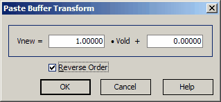

Trasform function
Trasform function

The Transform function in OptiLayer allows you to recalculate all the data in the Paste buffer using a simple linear transformation equation:
Vnew = A · Vold + B ,
You can specify the values of coefficients A and B in the Transformation dialog to customize the transformation according to your needs. In addition to the Transform function, there is an option to Reverse Order of values in the Paste Buffer. This feature allows you to reverse the order of the data values in the Paste Buffer before applying any transformations or pasting the data into your target file. Once you have set up the transformation coefficients or reversed the order of values, you can press the OK button in the Transformation dialog to apply the Transformation function to the data in the Paste Buffer. This will recalculate all the values in the Paste Buffer according to the specified linear transformation equation with coefficients A and B.